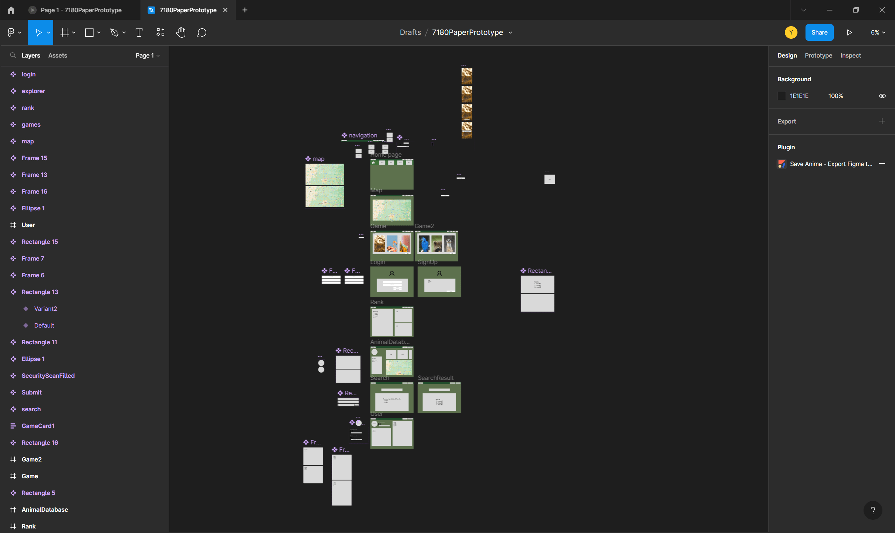
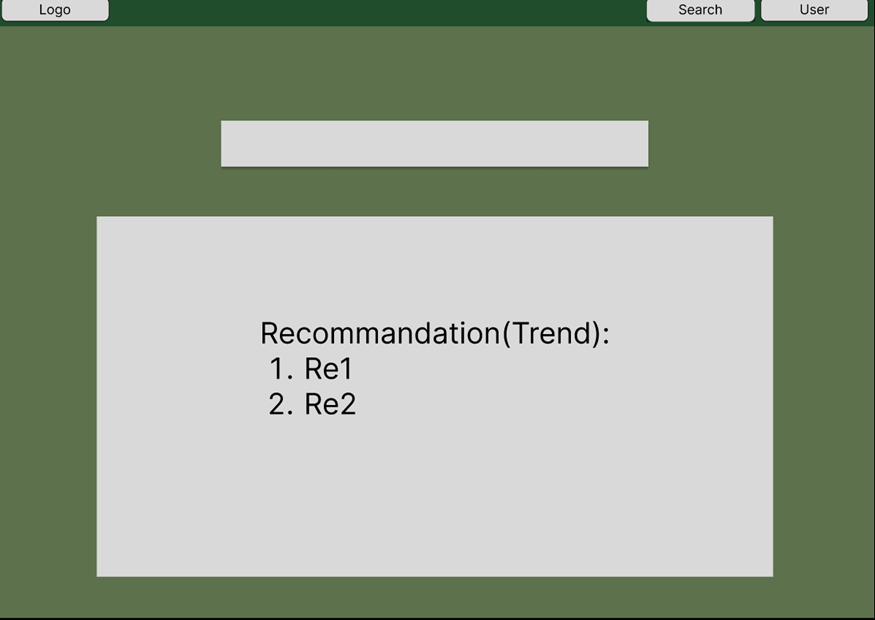

Email: qyq_apache@outlook.com
There are 6 topics including Public Spaces, Inner City Transport, Emergency Response, Flora and Fauna, Circular Economy, GovHack Challenges -- Environment, Social, and Governance.
Poster
{kind=link}
The first thing to do is look at the dataset and then use the random idea generator to get random ideas. (Idea Generator, n.d.) The idea generator will randomly select a master dataset and another dataset for assistance. It will also randomly select a target audience and a short description. After generating the idea, combine these elements and use the template to create a poster to virtualize the idea.
{kind=link}
Poster detail
Topic
FloraAndFauna
Brief
The fundamental foundation is that Australia is home to a vast range of unusual plants and animals. Then, both plants and animals face extinction issues. The main aim of the topic is to increase public understanding of the value of conserving biodiversity.
Dataset
Primary
-
census-of-the-queensland-flora-2021
This dataset is about the distribution of flora in Queensland. The dataset protects a comprehensive range of animal species. Include all kingdoms, classes, families, and species. It also contains individual information about the animal. Some of the animals have animal sighting information, location information, text descriptions and pictures.
Secondary
-
soe2020-threatened-flora-species-habitat
Distribution of threatened flora in Queensland. This dataset can help provide data on the distribution of endangered species.
-
soe2020-major-threats-to-flora-species
Major threats to flora species. Previous datasets only provided information on species' endangerment and distribution. This dataset provides a reason why. It can help people realize the endangered situation of living things and know how to do to alleviate the problem.
Additional API
Purpose
- To help more people easily browse the flora of Queensland
- To help more people understand which flora in Queensland are currently at risk of extinction
- To help people understand what are currently the biggest threats to plants in Queensland
Target Audience
-
People with mobility impairments
To help them learn about the flora of Queensland without having to travel. -
Journalists
Provides information and visualisations about threatened plant communities in Queensland.
-
New residents
Help them learn more about Queensland Flora.
Interactivity
- Search for specific flora display detailed information for specific flora.
- Display of rare flora map of flora distribution in Queensland.
Summary and reflection
What learned?
I have learned a efficient process of create and structure an idea. Basically choosing a basic direction and then seeking inspiration. For example, the direction can be flora and fauna. And the inspiration can be a random idea generator or similar website in the topic.
Next, determine the details of the idea step by step. The first is the target audience, followed by the problem description and the goal of the site. Then, explore the problem space based on the aforementioned target audience. In the context of the problem, and in conjunction with the API, determine the functionality and interaction of the site. Think about how your target audience will use these interactions and features, and then.
Finally, can use tools to create virtualizing components like a poster.
Challenges and future improvements
The main difficulty is that the initial stage is very confusing, each of the 6 directions contains many possibilities, and the idea from the random idea generator is very random. So it's hard to come up with a specific idea. If I do this again, I will figure out more details in terms of design. For example, the target audience can be further refined. A more specific target audience will help clarify the site's design concept. Then as for the interaction, which can also be further refined and add more functionalities. After that, the design style of the website can also be refined according to the target user, such as the target user is an outdoor lover, then the style of the website can be natural and tough, the main color is adjusted to green, brown and so on.
In terms of technology, since I am familiar with the use and content of apis, I can look for more available apis to help implement website functions. For example, I can use map API and animal sightings in QLD wildlife API to display surrounding animals.
After team formation, we as a team do brainstorm on the studio and determine the project of the team while watching posters of all students.
{kind=link}
Concept generation
The first to identify is the topic, the topic of our team was decided to be FloraAndFauna after discussion. This topic was chosen for several reasons.
- First and first, the majority of the team members are interested in plants and animals. According to our team information website, the topic of Flora and Fauna receives the highest score and may most effectively convey the common thoughts of the team.
- Two of our members also selected the topics of flora and fauna for their posters, indicating that some searches have been conducted on the relevant datasets in this topic.
- The development of the flora and wildlife, on the other hand, has a lot of potential and room to do.
Then we looked at the posters displayed on the Miro and had a discussion about the various posters that each member found intriguing. There are eight posters in the "Flora and Fauna" category.(Studio One Design Inspirations, n.d.) We immediately noticed the topic called Garden Watch. However, we discussed and considered various implementation potential options. The topic requires a GPS implementation and a map connection to track the current location of the garden monitor. The design require a 3D representation of the garden. After careful consideration, we decided to give it up because it would cause a lot of unnecessary complexity.
We also found the topic Queensland's rare flora map, flora and fauna conservation and Fauna peripherals were very similar. They both use maps to show the distribution of species, with the goal of helping people realize that species are in danger. These three sites are similar to information display sites, the main interaction is through the map for query and viewing.
At this point, we were almost certain that the project concept is a map of endangered species. Then, one of the team members came up with a more interesting concept: a game in which players are given game body parts and asked to identify what they are.
The advantages of this idea are:
- It used games instead of maps to narrow the target audience to children, which helped define the overall style of the site.
- In addition, there are more specific aspects of games that can help narrow down the topic. We can focus on figuring out how to do this basic feature before moving on to other features.
- The game is more engaging than the map and can attract more users
After discussion, the initial structure of our project was to create a game for children that connects images of animals with facts or knowledge about animals. Children, especially those in primary school or kindergarten, are the target audience for this website.
We also created a mind map of the concepts, which greatly helped us to identify the main concepts and ideas. The main feature of our site is games. Essentially, the game is about showing the player (a child) images of various animal body parts and asking them to guess the image by text typing, selecting, dragging, or clicking.
{kind=link}
{kind=link}
{kind=link}
After rapid design sprint, the main idea of our team project was to create a website of which the main functionality is a game for children that connects images of animals with facts or knowledge about animals. Children, especially those in primary school or kindergarten, are the target audience for this idea.
Summary and reflection
What learned?
The purpose of the rapid design Sprint is to obtain the team project concept from each person's own posters from design inspiration and through brainstorm.
Through this practice, I learned how to efficiently determine and plan the design ideas of a project in a team.
First of all, we got inspirations. Then, we brainstorm a unified idea framework by watching similar website and others ideas.
We started with the target audience and identify problem statement. Next, according to the main API, determine the functions and interaction of the site. Through features and interaction, then find the corresponding auxiliary API.
Future Improvements
This time a lot of time was spent figuring out the process. If we do it again, we will pay more attention to the perfection of concept details. For example, in terms of APIs, we can find more auxiliary APIs and think of more interesting functionalities. For example, we can add more types of game.
Meanwhile, I will focus on the target audience aspect and narrow down the target audience, and think about their application scenario.
After generating the final concept of team project, we decide to construct the digital prototype first to better virtualize the idea and we can do quick modifications on it.
Digital Prototype
I did researches on the datasets and problem areas and created a poster to outline my thoughts. I then participated in discussions in the studio, contributing ideas and helping to shape our team's final design concept.
In summary, there have been two stages leading up to this point for the early proof of concept designs. First, during studio time, we discuss the potential topics, select the idea, and structure the idea.
After studio, we then made the decision to begin constructing a low-fidelity prototype each member to visualize the concept after the studio and the prototype can also be used for user testing and quick modifications. I used Figma to make my side of prototype.
It can be viewed under
7180 digital prototype. Then we discussed each one’s idea in the team meeting on Monday, August 22. The interpretation and design I came up with are described here, some of which have been altered after team discussions.
{kind=link}
{kind=link}
The homepage is shown here. The header bar on this page—the main page—allows users to navigate between pages. Even though the content of the home page has not yet been chosen, it should have some images or details about current trends.
{kind=link}
Users can search for the desired item in the search page
{kind=link}
This is the game page. Games are a fundamental feature of our project.

The description includes animal images, description and a map to display animal distribution.
Proposal presentation
{kind=link}
I was the initial review's presenter. I learned a great deal in the process. The first is that the speech should not be comprehensive and exhaustive. Instead, concentrate on a few key concepts and cover as many angles as feasible. Likewise, there is no need for technical details from the standpoint of the audience; to engage the audience, it is most vital to ensure that they comprehend. Moreover, speakers should slow down. To avoid being nervous, I envision myself conversing with pals during the actual presentation.
After presenting the Design Proposal Milestone, we received some insightful comments. There are two crucial aspects of content-based feedback:
- Children cannot access certain computer websites
- Children require simple and engaging activities
For target audience, we include the parents and teachers of the youngsters. In this instance, adults can assist children in accessing and operating websites via computers; adults can serve as guides, and after teaching children how to operate, they can provide supplementary knowledge explanations. Children should be able to obtain prizes for winning the game. Based on the content of this input, every member of our team has engaged in further reflection.
The initial concern relates to the barriers between youngsters and websites/computers. It is prudent to include the child's parents or teachers in the target audience. However, the debate arises as to whether the look and substance of the website should be tailored to adults. Our response is no.
Children should continue to be the major audience for websites, and websites should be designed for them. The roles of parents and teachers are merely that of guides and assistants, not actual users, despite the fact that parents are in fact users of the website. Therefore, when we design, we still begin with children's cognition and psychology as our starting point. The website can be used as a parent-led game and a teacher's educational tool to assist children learn about and comprehend animals. Also, youngsters between the ages of 6 and 12 who are interested in animals will be a more ideal audience because they have sufficient computer/website access and operation skills. This also simplifies user testing, as kindergarteners are already able to convey their emotions precisely and responsibly, and we do not have to worry about how to test with them. Therefore, the target audience will consist of animal-loving children aged 6 to 12 and their parents and instructors. In addition, we will develop a website with animal-themed guessing games with animal knowledge as the material.
The second relates to how youngsters interact with the website. The interaction should be easy. Due to their psychological and cognitive immaturity, youngsters like simple, direct, and intuitive things. We will avoid complex page layouts, function buttons, and textual statements in the design of our website.
Instead, we will utilize a single page, as few and straightforward buttons as possible, and icons. There are a few merits.
- The game's functions are contained on a single page
- Continuous operations should be simplified through the use of automatic pop-up messages, such as message boxes with buttons.
- Instead of discussing the process in words, the prompt for the operation might visually remind the user of the next operation by flashing and resizing the button.
- Various portions of the website should also be represented with visual representations, such as a desktop or a book for the game area. Avoid utilizing text input in lieu of button selection. Interactions must be ongoing. Continuous interaction contributes to user stickiness, making it appealing for young users to return to the site to play again. Here are some points.
- Display the user's winnings (gold coins, medals, trophies, etc.) and accomplishments when he or she has won the game, as well as provide a list of cool names from which to choose.
- Record the number of times the user has won the game and the associated awards, and automatically display this information to the user, in order to develop a dependency by satisfying the achievement feeling.
- Prompt and encourage the user to play the following round in order to create a continuous interaction.
- Allows youngsters to play and converse anthropomorphically with a cartoon character, making them feel less like they are operating a cold machine. It all comes down to the enjoyment of the game. Regarding this, we also hold the following beliefs:
- Variable and random game components. The game's content should be varied and optional, and children should be able to select different animal images at any moment by clicking on different buttons. Various background modifications are supplied to correspond with the animal being guessed. And for added fun, the implementation method underlying these modifications can be made to be random.
- Diverse game rewards Likewise, game incentives should be varied. After winning a game or achieving a particular number of victories, the website will deliver feedback in the form of gold coins, trophies, medals, and titles.
- Unique video game characters User roles might be exclusive. By selecting to play the game as a variety of characters, it is possible to acquire rewards pertaining to those characters. The aforementioned three factors correspond to the beginning of website design, the specific general design, and the functional design. This is our team's reaction to your feedback; we appreciate your input. We hope to improve our designs even further. For future enhancements, we may conduct further user tests to get input from our target consumers.
Implementation
After completing the initial prototypes and we combine our ideas as a team. We finalize the final concept and start to implement it.
A4a: Design Proposal Milestone
Paper Prototype
This is the initial paper prototype. And we use it for presentation and user testing. At this stage, the main target audience of the project is children in primary school or kindergarten. And we want to create a website that can help children learn more about animals.
The main function of the website is a game that connects images of animals with facts or knowledge about animals. Besides, in explorer page, users can shake for random animal and see the animal description. In rank & prices page, users can see the rank of users sort by score. The score is calculated by the number of correct answers from previous game play.
{kind=link}
{kind=link}
{kind=link}
{kind=link}
The main purpose of the paper prototype is for virtualizing the idea and user testing.
A4b: Work in Progress Milestone
Initial prototype

{kind=link}
{kind=link}
{kind=link}
{kind=link}
{kind=link}
{kind=link}
{kind=link}
{kind=link}
Progress prototype
{kind=link}
{kind=link}
{kind=link}
{kind=link}
Work in Progress Presentation

In week nine, our group did a work-in-progress presentation and received feedback from our tutor and peers. This time, we received favorable feedback as opposed to negative feedback in the last design report. We have effectively addressed some of the flaws that existed in the past and advanced the entire project. This time around, the game's fundamental features were rather well-developed, and we constructed a minimal viable product (MVP) according to plan. Feedback is more concerned with usefulness and engagement than aesthetics, thus we will concentrate on providing transparent and instructional feedback.
The critique centered on two negative issues: the first concerned the game's intended demographic and primary functioning, and the second concerned the site game's feature design.
Our target audience for our website is changed to children aged 6-12 according to the feedback from the last critique. They are in a period of curiosity and imagination. So they are willing to learn and interact with websites about animal games.
Queensland is a wildlife-rich region that is home to a variety of fascinating and intriguing species. Children from Queensland are interested in learning more about the animals; children from other regions will be interested in seeing animals that are different from their own. Games are a terrific method to engage users with your site's content. Longer game interactions strengthen the relationship between the user and the website, allowing more information to be given to the user.
The game takes the form of solving puzzles. Because the jigsaw puzzle is a classic and simple game, the simple function and appropriate difficulty make players need to spend a certain amount of time to complete it, but will not consume too much energy and lose the fun.
There are multiple modes of puzzle setting complexity. Different game difficulties will accommodate different pupils and provide a step-by-step mastery progression. In conjunction with the success tracking system, the improvement in children's play level shown by this procedure will offer children a sense of accomplishment and strengthen their sense of participation. We chose to implement three distinct levels of difficulty — easy, medium, and challenging — and varied game elements and prizes to enrich the gameplay.
Create the game's backstory and provide the player characters. By establishing a distinct tale setting, connect all game elements — animal information, graphics, game features, and player characters — together. This will aid us in designing the aesthetics and functionality of the game and website, since developing clear game aspects will assist us in identifying the precise tasks that must be completed. This will also assist users build a stronger connection with the site, giving their use of the site greater significance, and improve the possibility that they will utilize the site. We chose to emphasize animals and adventure, and the user's character would be a wilderness adventurer. Provide options for game aspects. The options below include animal categories, game interface backgrounds, user characters, and game rewards.
These aspects of the game should be compatible with one another. For instance, the interface background matches the present surroundings of the animals; the game's awards reflect the level of protection and status of the animal. By selecting various components of the game, the player constructs a mental reference object that correlates to those elements. Various game Settings, for instance, instill in the player's head distinct ideas of animal habitats.
A4c: Final Delivery
Final Prototype
{kind=link}
The purpose of the homepage is to introduce the site's theme and direct the user to the menu page. You can access the menu page by pressing the PLAY button in the page's center, which shakes when the mouse is dragged over it. The banner at the top of the page displays the website's name, GuessWhoAmI. The About page can be accessed by clicking the exclamation point icon at the top right of the page.
On the homepage, there are four animals: a monkey, a parrot, a tortoise, and a crocodile. When the mouse moves over these animals, their images will tremble; clicking on these images will activate the corresponding animal sounds (the sound of water bubbles after clicking on the turtle). When a button on the site is clicked, sound effects will play.
{kind=link}
There are three rectangular buttons presented in the middle of menu page (as the mouse moves over certain buttons, they will shake with unique animations). The "PLAY" button leads to the game page, and the "ANIMALS" button leads to the animals page. The "EXIT" button returns back to the welcome page from the animal page.
The camera locates in the bottom left of the page is a button with a shaking effect. When a user hits a link , he accesses the animal page; the book symbol in the lower right corner guides the visitor to the character page.
The page's upper left features two green chart buttons, The home is the symbol on the left returns the user to the homepage, while the icon on the right leads to the navigation menu. The direction to the right leads to the menu page. The uppermost exclamation mark button The About link on the page's right leads to the About page.
{kind=link}
The website's primary feature, jigsaw puzzles, are accessible via the games page. The page will initially load the image and display the animation of the loading spinner, which comprises of dynamic green and orange squares. When the page is loaded, the central game panel displays the puzzle image for the game, while the right-hand control panel displays the game's timer. In addition, it displays the origin of the game's name, content, and images. In the center are two green buttons. After pressing the question mark button, a page containing the game's rules will appear. The refresh button refreshes the game's content, replacing the current puzzle image with a new one.
On the right side of the page is a board-style control panel that displays game timing and step counting (one step is counted each time the user moves a puzzle piece), as well as the type of animal image and the game's level. The default animal image type is Birds, while other alternatives include Insects, Mammals, Ray-Finned Fishes, and Amphibians. By clicking and selecting a particular category, images of animals belonging to that category will be revealed. The number of picture blocks in the puzzle is 3*3 when the game difficulty is set to Easy; 4*4 when the game difficulty is set to Medium; and 5*5 when the game difficulty is set to Hard. After checking the animal category and game difficulty settings, hitting the OK button will refresh the current jigsaw puzzle's pieces.
When the puzzle is solved, a page with information on the victory will appear. After clicking the OK button, reload the game and save the current puzzle image to a remote server; the user can then view the collected animal photographs on the website dedicated to animals.
{kind=link}
The center of the animal page displays the animal images the player has collected during the game. These photographs are exhibited in the style of a card with a flip effect. When the mouse is moved over it, the card will be flipped 180 degrees horizontally and the back of the card will be visible. The front of the picture shows the name of an animal and the corresponding puzzle picture, and the back of the card shows information related \sto the animal, including scientific name, kingdom name, kingdom common name, class name, class common name, family name, family common name, conservation status and species environment, all from the QLD wildlife data API
{kind=link}
The animal details will appear when the green ellipsis button on the back of the card is clicked. It is broken into three sections, the first of which displays the same information as the card content, the second of which displays a text introduction from Wikipedia, and the third of which displays relevant images from the Flickr photo website. Images on Flickr are shown in card-shaped boxes that include the image's title, source, and description (if any). Clicking the red close button will close the sub-window containing the current animal detail information, allowing the user to examine other animal details.
{kind=link}
This page provides a summary of the site's information and citations. It describes the site's name, its purpose, the used dataset or API, and its author. On the other hand, it indicates the source of the code, sound effects, and graphics that the website references or uses.
{kind=link}
This page gives information on the user's current character. It is still uncompleted that allows users to select characters and gather animal photographs with various characters.
Backend database
{kind=link}
{kind=link}
Trade show
{kind=link}
-
Quick Introduction
- Target audience
- Children aged 10 to 12 who are interested in animals and nature
- Parents of children
- Because children may not be exposed to computer sites
The website can be used for education purpose
- Problem statement
- Biodiversity is being destroyed
- Children have less knowledge of animals and nature
- People do not pay enough attention to the conservation of biodiversity
- Aim
- Help children meet and learn more about animals
- Arouse interest in nature and animals
- Help them realize the importance of animal protection
- API
- QLD wildlife API
- Why? It is a relatively complete animal database Species name
- Class
- Family
- Species Image(Many are missing)
- Species description(Many are missing)
- Conservation status etc
- Flickr(Extra animal images)
- Wiki(Extra text description)
- QLD wildlife API
- Functionalities
- Jigsaw puzzle of Animals
- The puzzle
- Switch the difficulty(Number of puzzles)
- Switching animal species(animal class)
- Statistics
- Time spent
- Steps count
- Refresh the image
- View the game rules
- After the success of the game, the picture will be collected to the Animals page
- Animal collection(Animals page)
- Animal collected
- Animal detailed description
- Images collected from Flickr
- Text description from Wikipedia API
- About page
- Team member introduction
- References
- Libraries
- Fonts
- Pictures
- Sound effects
- Jigsaw puzzle of Animals
- API Usage
- qld wildlife API
- First, build a database in mysql.
Create tables.
Make API calls to fetch data from QLD wildlife API. First Kingdom, next class, next
family and
finally
species.
Attempt to fetch image url from species profile url. Only around 800 images can be
fetched from
over
10000 species.
Use image table inner join species table
Filter out species with missing images.
- Flickr
- Request images using animal acceptCommonName
- Wikipedia
- Use the name as the page title and get the corresponding json, which contains the html
of
the
wiki page.
Then use DOMParser to parse the html and get the text description information
DOM(document object model) Parser parses strings into HTML or XML format
- Images
- Freepik
- Font
- google font
- Sound Effects
- Pixabay
- qld wildlife API
Summary and reflection
Summary
I have learned a lot through the process. First of all, I learned a complete product design process. The first is to identify the topic to get inspiration, by looking at other similar sites, browsing APIs, etc. Then from inspiration to idea to concept. First determine the target user, then determine the problem statement, then determine the purpose, then determine the main functional interaction of the website, then determine the style and other details. By poster, MindMap, storyboard and other means. Then, through concept to digital prototype by inVision, Figma or other tools. Paper prototype can be used for user testing, as it can iterate quickly to feedback.
As for coding, websites mainly use HTML, CSS, JS for front-end implementation and PHP for the back end implementation, including HTML dynamic generation and data collection and storage. Back-end often implemented as linux servers like UQ Team Zone and can connect to the server via SSH using shell. For example, popular shell terminal software include MobaXterm, PuTTY, FileZilla, FinalShell etc. To access to the server, input the server IP address, username and password. Then I can use the terminal to connect to the server.
Interaction with numerous APIs is a crucial component of a website's implementation. Watch the API documentation in order to know the API's rules and how to access it. To utilize these APIs, I am typically needed to create an account and acquire an API key. The API can then be accessed using the API key. I can generate simple API calls to test connectivity initially. It is possible to submit HTTP requests via the browser, with tools such as Postman, ApiFox, or with JS or PHP, among other techniques. After receiving the response, I am certain that the API is available and can construct complex requests as required. AJAX in JS or file get contents in PHP can be used to construct an API call. And the response data is frequently a JSON string. I can use json decode to convert a string back to JSON, and then retrieve the necessary data using a key:value pair.
Cache is an important part of website implementation that can be used to drastically improve loading time or remember user information such as login status, previous operations, etc. localStorage is used to implement local caching in JS. In PHP, can use file_put_contents. To recognize that cache is frequently in string format, it is necessary to convert to JSON format or other format before using and to string format before saving. Also, the cache expiration time can be specified to prevent cache overflow.
After getting the data, then I can do some modifications to the data and then display it on the website. For example, filter the data. It often used in search function or data preprocessing. There are many ways to filter data. One important way to filter string is regular expression.
I can also save data in the backend database in order to reduce the number of API requests and loading time. This is possible with PHP PDO (PHP data object). To save data to the database, I can first log in with the username and password. Create the database and tables using SQL DDL. Then, using SQL DML, insert the data into the table. SQL DQL is used to obtain data from the database. For instance, our website uses inner join to filter animals that does not contain photos.
I have also learned about valuable APIs, including the QLD wildlife API, Flickr API, Wikipedia API, Google font API, Google map API, and Leaflet map API.
I have also learned how to use various of libraries and frameworks such jQuery, Chocolate JS etc. These libraries contain numerous helpful functions that can be used to efficiently implement certain functions.
I learned a great deal about presenting as well. Instead of technical complexities, the presentation should focus on the presentation's primary ideas and consider the audience's perspective more. The objective is for the listener to comprehend the speech's topic. A typical presentation should include an introduction, the main body, and a conclusion.
As for design perspective, I learnt how to use color, layout, etc. to produce a positive user experience from a design standpoint. I've learned how to design an effective interaction response by animation of hover, click, and sound effects.
In addition, I've learnt what a comprehensive website should include. Each page contains a title, navigation bar, and footer. A website should have a homepage, functionality pages with the website's primary functionalities, a about page for introduction and references, a contact page for user feedback, and a user page with login, signup, and user information.
Future improvements
- The QLD Wild Life API now used as the primary dataset. The data is reasonably complete, and it is simple to utilize. The issue is that some of the data is incomplete, outdated, or inaccurate. For instance, there are a large portion of missing animal photos. Data on animal sightings are back ten years out of date. Many species lack of text descriptions and information about their endangered status. There are various aspects where the animal data might be enhanced.
- Can collect animal data by ourselves and create our own animal dataset. That can improve the accuracy and completion of animal data.
- Use a filtering algorithm or technique to better filter out the inaccurate animal data. or instance, we may employ specialists to enhance and filter the animal data. To help increase the accuracy and timeliness of data, we could also add user feedback or bury points with big data technique in web pages.
- Bring in more data sources. Currently, QLD wild life API serves as our primary data source. Using wiki text and images from Flickr, display animal detail information. We can include additional data resources. For instance, right now. There are some statistics on the status of animal conservation, but none on the reasons why the animals are in danger. We may therefore include additional information source for this aspect.
- Front-end implementation: The current front-end buttons and feedback are relatively simple, most of them are shake effects, and the sound effect is relatively monotonous. There are several aspects that can be improved.
- The first is a comprehensive beginner's guide, which provides guidance to help users understand the detailed use of the site.
- Enhance the dynamic effect of the website, including the hover effect of the button, click effect, sliding animation, loading animation and so on.
- To produce unique graphics and other UI designs, we can either hire an artist or try to bring in the latest AI drawing technology.
- Enrich the sound effects, especially the pertinence of the sound effects, such as monkey pictures can produce the sound of monkeys, the sound can also be changed at different time, so that make the website more alive.
- Responsive design can also prompt. At present, the web page is only displayed normally on the PC side, but the display is incorrect for the mobile phone screen and other special-shaped screens. We can add support for more screens of different proportions, and for different devices.
- In terms of back-end implementation, the current website is based on team zone's MySQL database.
- For now, the back-end depends on the team zone. In the future, we can consider finding another back-end service provider or deploying our own back-end server.
- Functionally, there is no user login system and no user database in the back end. At the same time, the web page has no local caching capability.
- Can add user database to store user name, password, and including game records, login records and other statistical information. In front-end, construct the corresponding login page and user setting interface. Local caching of user login data cookies, as well as some other information, helps speed up the loading of web pages.
- Add a user leader board functionality to rank users based on the number of points they earned by playing the game.
- More game types can be added to target children and site-themed animals. For example, Monopoly games, given pictures to guess animals and so on.
- One of the aims of the website is to help children understand the importance of biodiversity. So more animal protection information can be added. Such as showing what causes an animal to be endangered.
- Once the user base is large enough, more considerations need to be added.
- The back end can use a distributed framework such as Hadoop for better data storage and data analytics.
- Other distributed databases like Doris, Clickhouse, and so forth should be taken into consideration since MySQL is not very effective in regarding to performance at high concurrency for transactional functions.
This section mostly addresses Portfolio's design and interactivity. The portfolio contains 6 main sections, which are about me, A2, A3, A4, Portfolio, References. Each section contains a header and content.
Design
Font
- Page Title: Island Moments(Google Fonts, n.d.-b)
- A recognizable title style
- Content: Lato(Google Fonts, n.d.-a)
- Consistency and Good looking
{kind=link}
{kind=link}
Color
- Background Color: background-image:linear-gradient(0deg,#d5d4d0 0%, #d5d4d0 1%, #eeeeec 31%)
- Professional style
- Font color: #000000
- Divider color & border color: #b4b4b4
- PressColor: #5e5e5e
- HoverColor: #8a8a8a
- ContentCardBackgroundColor: #f5f5f5
JS libraries
- JS libraries
- Chocolate JS(Turlais, 2012/2022)
Design Concept
- Consistency
- same hue and style
- Same font
- identical hover and click effect
- Recognizable
- Reasonable color contrast
- Hover and press effect
- Concise
- White gray black as the dominant color scheme
- Square edge
- Shadows augment the sense of depth
- Use a transparent and blurred background for the side menu and the sub-navigation for a contemporary look
- Smooth
- Smooth dynamic effect
Dynamic effect
- Hover
- Sliding effect
- Press
- change color from #8a8a8a to #5e5e5e
-
GIF
- GIF for better demonstration

GIF
{kind=link}
{kind=link}
{kind=link}
{kind=link}
{kind=link}
{kind=link}
Interactions
- Navigation
- Side bar
- Quick navigate to different section
click and navigate to specific section - Content card
{kind=link}
{kind=link}
{kind=link}
{kind=link}
{kind=link}
Cache
- Using JS localCache to store previous status
- Because the website is long, user need to swipe back to previous position to continue reading. Therefore, use cache to store scroll position and content card fold status.
Dynamic content construction
- Using JS functions to construct some contents to save time and avoid errors
- Figure number
- Navigation
- Sub navigation
- Side navigation
- Content navigation
- Some HTML contents
Responsive design
- Navigation bar
- Side bar
- Content card Header

Reflection
Portfolio is a demonstration that includes much of what I have learned this semester. Also, this is an excellent opportunity to evaluate the entire journey and summarize what was learnt. There are other improvements that may be made to the portfolio, including the addition of sound effects, PHP back-end implementation, caching login information in the back end database, etc.
What learned
This course covers the whole process from design to code implementation, and I learned a lot from it. In general, the course includes the design phase, the code implementation phase. In the design stage, I learned how to acquire idea and how to develop an effective idea into a complete concept.
At the same time, I also gained experience in presentation, including how to make ppt and speech skills. I got the most out of the code. I am more proficient in HTML, CSS and JS I have learned before.
Meanwhile, I have gained new knowledge of PHP back-end, database and API. Now I can independently design and code a website and deploy it to a back-end server.
At the same time, I also learned how to work in a team. On the one hand, members should communicate effectively with each other to know each other's strengths and weaknesses. On the other hand, maintain constant communication. The division of labor is also very important. Generally, there is a team leader, and then some members are more involved in design, and some members are mainly responsible for code implementation.
Future
In the future I can get greater depth of knowledge, such as how PHP engine and JS work, etc. These are quite useful for debugging.However, I would like to broaden the scope to include major front-end frameworks such as Bootstrap, React, etc. These frameworks include prebuilt libraries for speedier development and a better user experience.On the back-end, I will continue to learn Linux, Nginx in-depth, and more databases, such as Redis, PostGreSQL, Oracle, and Clickhouse.
Concurrently, I will also read certain books regarding the code itself, on the one hand to make the project structure more regular, optimize the code structure, and optimize the readability. Learn data structures and algorithms to reduce code's temporal complexity and make it run quicker, use less space, and enhance code efficiency.